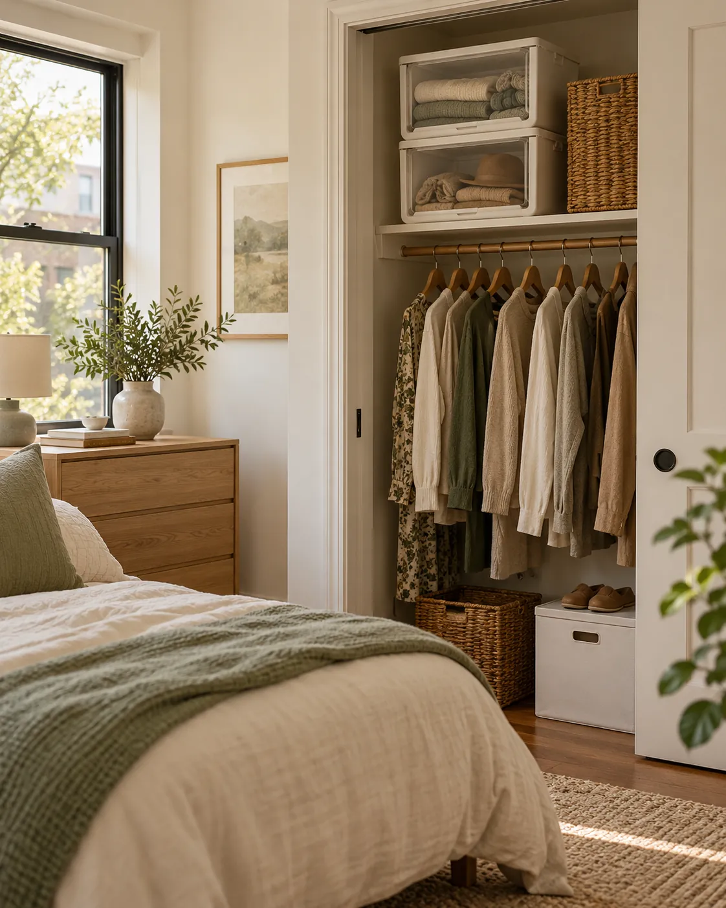

01
SMALL HOME ORGANIZER 01
Stackable storage bins
Stacking uses shelf height, but tall piles can make the bottom bin hard to reach. Use a stable open-front design for everyday supplies and label the contents where you can read them.
OPTION TO COMPARE
IRIS USA open-front stackable bins, 4-pack
An option for grouping pantry extras or household supplies on an existing shelf. This open-front design is different from the enclosed bins in the inspiration photo.
View IRIS on Amazon →As an Amazon Associate I earn from qualifying purchases.